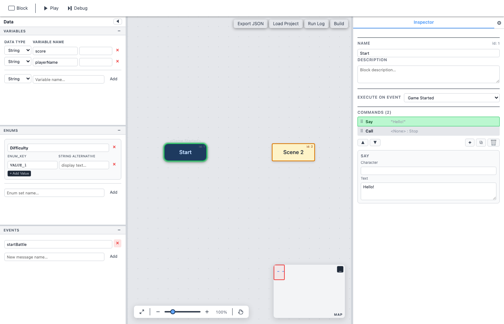
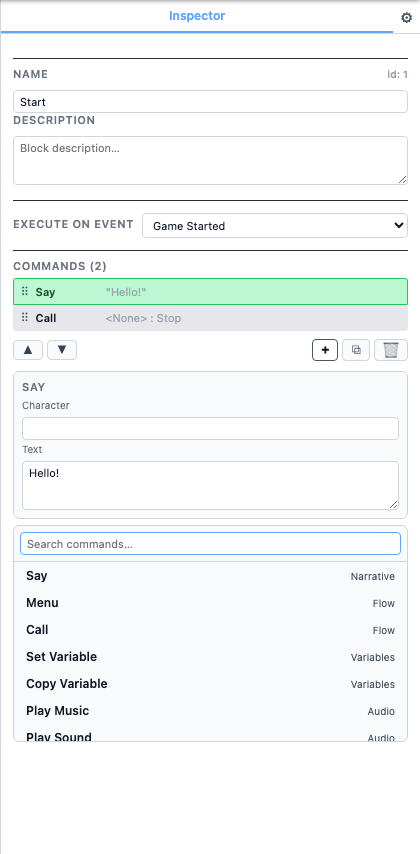

Getting Started
This guide walks you through creating your first flowchart in Son of Fungus. By the end you will have a working project with blocks, commands, and a playable runtime preview.

1. Create a Block
Blocks are the building units of every flowchart. To create one, drag a block from the toolbar at the top of the canvas onto the flowchart area. A new block appears with a default name that you can change in the Inspector panel on the right.
2. Set an Event
Every flowchart needs at least one event block to know where
execution begins. Select your block and, in the Inspector, set its event trigger to
Game Started. The block turns blue with rounded corners to show it is
an event block.
Other event types include Message Received (reacts to a named event)
and Key Pressed (reacts to a keyboard key).
3. Add Commands
With a block selected, click the + button in the Inspector to open
the command picker. You can search by name or browse the categories. Pick a command
— for example Say — and it is appended to the block's command list.
Here is what a simple command list with Say and Wait commands looks like:
Each command has its own set of fields (text, target block, variable, etc.) that you fill in through the Inspector.

4. Run Your Flowchart
Press the Play button in the top toolbar. The runtime stage appears
and execution starts from the block whose event is Game Started.
Commands run in order; Say displays text, Menu shows
choices, and so on.
5. Debug
Click the Debug button instead of Play to enter debug mode. A status bar shows the current block and command. Use Step Into and Step Over to advance one command at a time and inspect variable values live. See Debug Mode for full details.
6. The Data Panel
The panel on the left side of the editor has three tabs:
- Variables — Create and manage typed variables (Boolean, Integer, Float, String, Enum).
- Enums — Define named sets of constants with optional string alternatives.
- Events — Register message names used by
Send MessageandMessage Received.
These are covered in depth on the Variables, Enums & Events page.
7. The Inspector
The Inspector panel on the right shows details for the currently selected block: its name, description, event trigger, and the ordered list of commands. Click any command row to expand its settings. A cog icon at the top opens the Settings tab where you can switch between State Chart and Fungus editing modes, toggle the dark/light theme, and more.